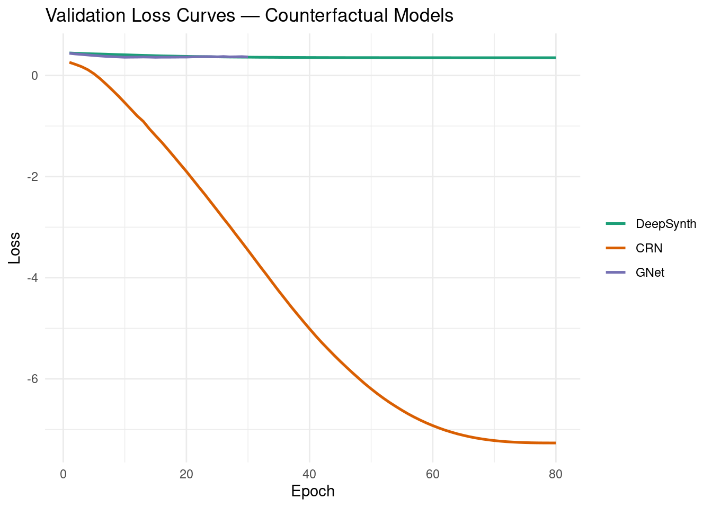
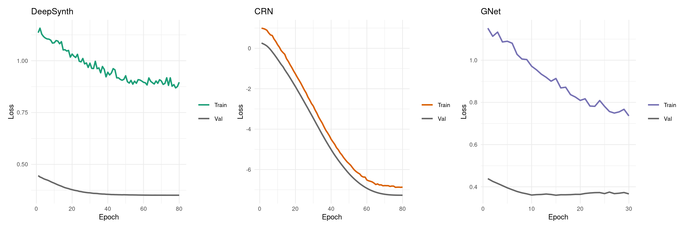
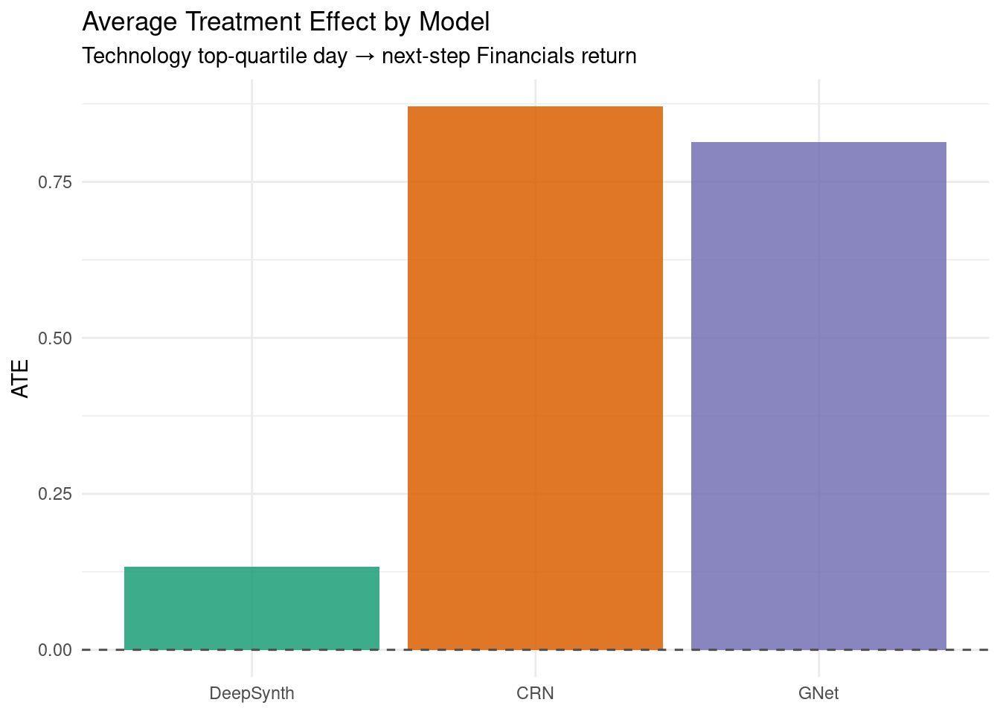
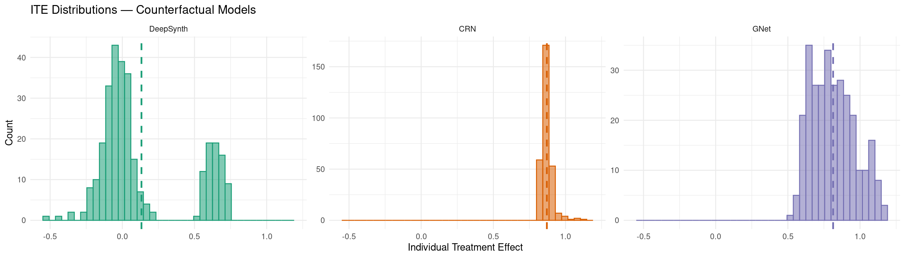
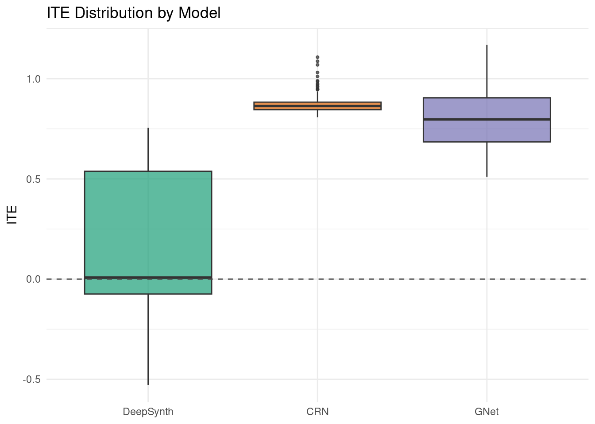
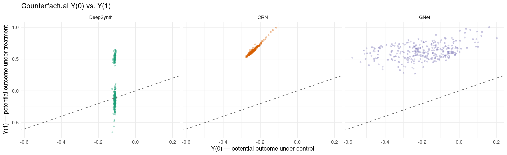
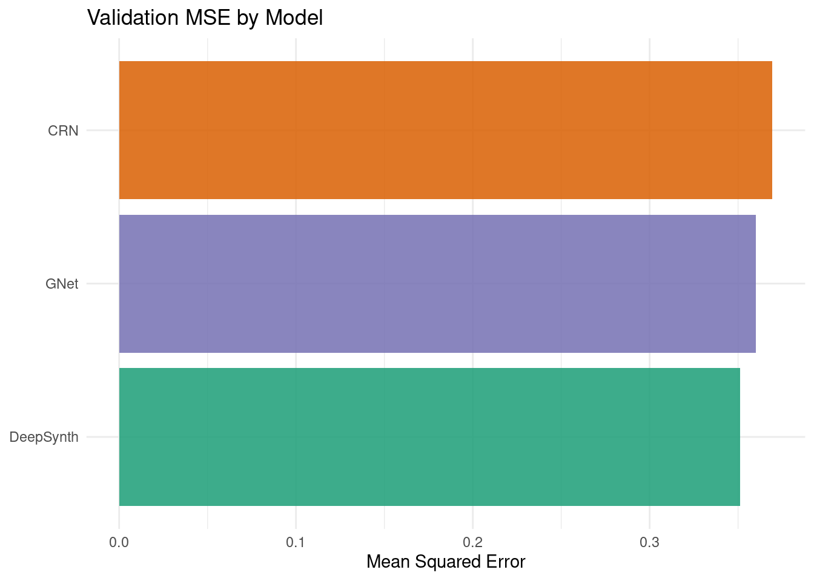
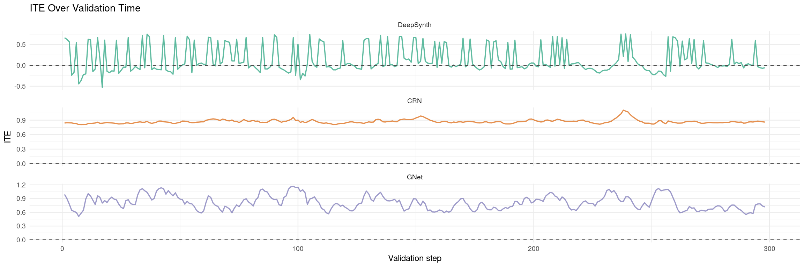
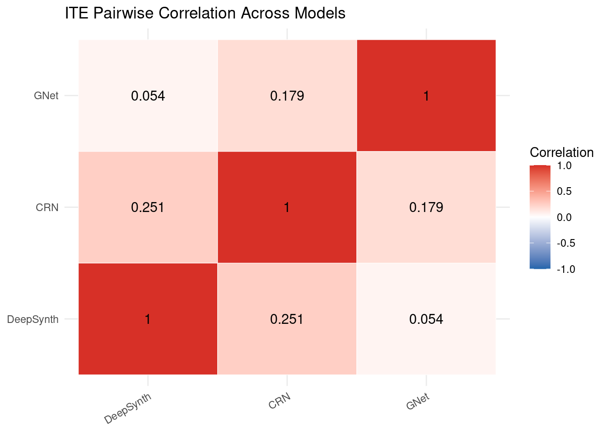

packages <- c(
'tidyverse',
'plyr',
'RCausalML',
'torch',
'tidyquant',
'reshape2',
'scales',
'patchwork'
)Counterfactual / Potential Outcomes Models
Potential Outcomes (Rubin Causal Model) frames causal inference around the question: what would have happened under a different treatment? This notebook implements three practical deep learning architectures for counterfactual time-series prediction:
- DeepSynth — Neural Synthetic Control
- CRN — Counterfactual Recurrent Network
- G-Net — Deep G-Computation
The workflow covers theoretical foundations, data construction from sector ETF returns, model training via {RCausalML}, counterfactual inference, and causal effect estimation.
Part 1 — Theoretical Foundation
The Potential Outcomes Framework
For binary treatment \(T \in \{0,1\}\), define potential outcomes for unit \(i\):
\[Y_i(1) = \text{outcome unit } i \text{ would have under treatment}\] \[Y_i(0) = \text{outcome unit } i \text{ would have under control}\]
The Individual Treatment Effect (ITE) is:
\[\tau_i = Y_i(1) - Y_i(0)\]
The fundamental problem of causal inference: for each unit/time, we observe only one potential outcome (the factual one). The other is counterfactual and must be estimated.
In time series with treatment history \(\bar{T}_t = (T_1,\ldots,T_t)\):
\[Y_t(\bar{a}) = \text{outcome at time } t \text{ under treatment history } \bar{a}\]
Key Estimands
| Estimand | Formula | Question |
|---|---|---|
| ATE | \(\mathbb{E}[Y(1)-Y(0)]\) | Average causal effect in population |
| ATT | \(\mathbb{E}[Y(1)-Y(0)\mid T=1]\) | Effect on treated units |
| CATE | \(\mathbb{E}[Y(1)-Y(0)\mid X=x]\) | Effect conditional on covariates |
| Time-varying ATE | \(\mathbb{E}[Y_t(\bar{a}) - Y_t(\bar{a}')]\) | Effect of treatment strategy over time |
The Confounding Problem in Time Series
Time-varying confounders create feedback loops:
\[X_t \rightarrow T_t \rightarrow Y_{t+1} \rightarrow X_{t+1} \rightarrow T_{t+1} \rightarrow \cdots\]
Here \(X_t\) can be both:
- a confounder (affects treatment and outcome), and
- an intermediate variable (affected by prior treatment).
This breaks naive regression assumptions and motivates causal sequence models.
Part 2 — Model Architectures
1) DeepSynth / Neural Synthetic Control
Classical synthetic control estimates a treated unit’s counterfactual using weighted controls:
\[\hat{Y}_t^{(0)} = \sum_{j \in \text{controls}} w_j Y_{t,j}, \quad w_j \ge 0,\; \sum_j w_j = 1\]
DeepSynth replaces fixed linear weights with neural representation learning and scaled dot-product attention over donor series:
\[w_j = \text{softmax}\!\left(\frac{q \cdot k_j}{\sqrt{d}}\right), \quad \hat{Y}^{(0)} = \sum_j w_j v_j\]
2) CRN — Counterfactual Recurrent Network
CRN uses recurrent representations and adversarial balancing to reduce treatment-assignment bias:
\[\min_{\text{enc, pred}} \max_D \; \mathcal{L}_{\text{pred}} - \lambda\mathcal{L}_{\text{disc}}\]
The discriminator \(D\) tries to predict treatment from the encoded representation \(r\); the encoder is penalised for making \(r\) informative about \(T\), producing a balanced representation.
3) G-Net — Deep G-Computation
G-Net learns sequential generative models for covariates and outcomes, then rolls forward under interventions:
\[\mathbb{E}[Y_t(\bar{a})] = \int \prod_{k=1}^{t} p(X_k\mid\bar{X}_{k-1},\bar{A}_{k-1}=\bar{a}_{k-1})\,p(Y_t\mid\bar{X}_t,\bar{A}_t=\bar{a}_t)\,d\bar{X}\]
Implementation in R
We use {RCausalML}’s counterfactual_model() function (and convenience wrappers deep_synth_model(), crn_model(), gnet_model()) to fit all three architectures on S&P 500 sector ETF daily log-return data (2018–2024).
Load and Check Required Libraries
Install Missing Packages
# Install missing packages
#new_packages <- packages[!(packages %in% installed.packages()[,"Package"])]
#if(length(new_packages)) install.packages(new_packages)Verify Installation
cat("Installed packages:\n")Installed packages:print(sapply(packages, requireNamespace, quietly = TRUE))tidyverse plyr RCausalML torch tidyquant reshape2 scales patchwork
TRUE TRUE TRUE TRUE TRUE TRUE TRUE TRUE Load Required Libraries
# Find package root (DESCRIPTION file) and load dev version of RCausalML
.pkg_root <- local({
paths <- c(".", "../..", "../../..", "../../../..")
found <- Filter(function(p) file.exists(file.path(p, "DESCRIPTION")), paths)
if (length(found)) normalizePath(found[1]) else NULL
})
if (!is.null(.pkg_root) && requireNamespace("devtools", quietly = TRUE)) {
try(devtools::load_all(.pkg_root, quiet = TRUE), silent = TRUE)
}
invisible(lapply(packages, function(pkg) {
suppressPackageStartupMessages(library(pkg, character.only = TRUE))
}))set.seed(42)
device_use <- NULL
if (requireNamespace("torch", quietly = TRUE)) {
device_use <- if (torch::cuda_is_available()) "cuda" else "cpu"
torch::torch_manual_seed(42)
}
cat(sprintf("Using device: %s\n", device_use))Using device: cudaData Loading and Preprocessing
This section downloads S&P 500 sector ETF prices, computes standardized log-returns, defines a binary treatment (Technology sector top-quartile return days) and a scalar outcome (Financials next-step return). A synthetic fallback is provided if market data is unavailable.
Note: If online market data is unavailable, the notebook automatically falls back to synthetic demo data so all downstream cells remain runnable.
TICKERS <- c(
"XLF" = "Financials",
"XLE" = "Energy",
"XLK" = "Technology",
"XLV" = "Healthcare",
"XLI" = "Industrials",
"XLY" = "ConsumerDisc",
"XLP" = "ConsumerStap",
"XLU" = "Utilities"
)
fetch_close_prices <- function(tickers, start = "2018-01-01", end = "2024-01-01") {
tryCatch({
raw <- tidyquant::tq_get(names(tickers), get = "stock.prices",
from = start, to = end, complete_cases = TRUE)
if (is.null(raw) || nrow(raw) == 0) return(NULL)
raw |>
dplyr::select(symbol, date, adjusted) |>
tidyr::pivot_wider(names_from = symbol, values_from = adjusted) |>
dplyr::arrange(date) |>
tidyr::drop_na()
}, error = function(e) NULL)
}
close_wide <- fetch_close_prices(TICKERS)
if (is.null(close_wide) || nrow(close_wide) < 30) {
message("Warning: market data unavailable; using synthetic demo data.")
set.seed(42)
n_steps <- 1200L
d_syn <- length(TICKERS)
# Correlated synthetic returns with a latent market factor
market <- matrix(rnorm(n_steps), n_steps, 1) * 0.8
loading <- seq(0.5, 1.1, length.out = d_syn)
idio <- matrix(rnorm(n_steps * d_syn) * 0.6, n_steps, d_syn)
data_np <- sweep(market %*% t(loading), 2, rep(0, d_syn)) + idio
colnames(data_np) <- unname(TICKERS)
} else {
price_mat <- as.matrix(close_wide[, names(TICKERS)])
log_ret <- log(price_mat[-1L, ] / price_mat[-nrow(price_mat), ])
colnames(log_ret) <- unname(TICKERS[colnames(price_mat)])
data_np <- scale(log_ret)
}
VAR_NAMES <- colnames(data_np)
d <- ncol(data_np)
Tt <- nrow(data_np)
cat(sprintf("d=%d variables, T=%d\n", d, Tt))d=8 variables, T=1508cat("Variables:", paste(VAR_NAMES, collapse = ", "), "\n")Variables: Financials, Energy, Technology, Healthcare, Industrials, ConsumerDisc, ConsumerStap, Utilities Define Treatment and Outcome
# Treatment: Technology shock — top-quartile standardized return
tech_idx <- which(VAR_NAMES == "Technology")
tech_ret <- data_np[, tech_idx]
threshold <- quantile(tech_ret, 0.75)
treatment <- as.numeric(tech_ret > threshold)
# Outcome: Financials (next-step)
fin_idx <- which(VAR_NAMES == "Financials")
outcome <- as.numeric(data_np[, fin_idx])
cat(sprintf("Treatment rate: %.2f%%\n", 100 * mean(treatment)))Treatment rate: 25.00%cat(sprintf("T=%d, d=%d, treatment -> outcome: Technology -> Financials\n", Tt, d))T=1508, d=8, treatment -> outcome: Technology -> Financialscat(sprintf("treat_col=%d (Technology), out_col=%d (Financials)\n", tech_idx, fin_idx))treat_col=3 (Technology), out_col=1 (Financials)Model Architectures Overview
All three architectures are implemented as R torch nn_module objects inside {RCausalML} and are accessible through the single entry-point counterfactual_model().
DeepSynth Architecture
- SharedEncoder: 2-layer GRU (input_dim → latent_dim) + FC layer → ReLU.
- Donor pool: all columns except treatment and outcome variables; each donor is encoded as a key/value.
- Scaled dot-product attention: query (treated) × keys (donors) → softmax weights → weighted donor summary \(z_{cf}\).
- Factual head: \(\text{MLP}(z_{\text{treated}} \| T_{t+1}) \to \hat{Y}^{\text{factual}}\).
- Counterfactual head: \(\text{MLP}(z_{cf}) \to \hat{Y}^{(0)}\).
- ITE: \(\hat{Y}^{\text{factual}} - \hat{Y}^{(0)}\).
CRN Architecture
- Encoder: 2-layer GRU on \((x, T_{\text{hist}}, y_{\text{lag}})\) → representation \(r\) via LayerNorm + Tanh.
- Discriminator: MLP predicts \(T\) from \(r\); adversarial loss penalises encoder for encoding treatment.
- Decoder: \(\text{MLP}(r \| \text{do}(T)) \to \hat{Y}\); counterfactuals under \(\text{do}(T=0)\) and \(\text{do}(T=1)\).
- Loss: \(\mathcal{L}_{\text{MSE}} - \lambda_{\text{adv}} \mathcal{L}_{\text{BCE}}(D(r), T)\).
G-Net Architecture
Input (x_t, T_hist)
│
▼
2-layer GRU backbone [d + 1 → hidden]
│
├─── Covariate head [hidden + 1 → d] → X̂_{t+1}
│
└─── Outcome head [hidden + d + 1 → 1] → Ŷ_{t+1}(ā)Counterfactuals \(\hat{Y}(0)\) and \(\hat{Y}(1)\) are computed by substituting \(\text{do}(T=0)\) and \(\text{do}(T=1)\) in both heads.
Fit All Three Models
counterfactual_model() is the single entry point for all three architectures. Internally it:
- Builds windowed
(lag, d)covariate history, treatment history, and outcome arrays. - Trains each model with AdamW + cosine LR schedule + early stopping.
- Computes ITE and ATE on the validation split for each model.
LAG <- 20L
cat("Fitting DeepSynth, CRN, and G-Net models ...\n")Fitting DeepSynth, CRN, and G-Net models ...cf_fit <- counterfactual_model(
data = data_np,
treatment = treatment,
outcome = outcome,
treat_col = tech_idx,
out_col = fin_idx,
lag = LAG,
models = c("deepsynth", "crn", "gnet"),
latent_dim = 32L,
rep_dim = 32L,
hidden = 64L,
lam_adv = 0.2,
dropout = 0.15,
epochs = 80L,
lr = 3e-4,
patience = 15L,
batch_size = 64L,
val_split = 0.2,
device = device_use,
verbose = TRUE
)
cat("\nTraining complete.\n")
Training complete.cat("Validation MSE:\n")Validation MSE:print(round(cf_fit$val_mse, 6))deepsynth crn gnet
0.351290 0.369460 0.360223 Validation MSE Summary Table
val_mse_df <- data.frame(
Model = c("DeepSynth", "CRN", "GNet"),
Val_MSE = unname(cf_fit$val_mse)
) |> dplyr::arrange(Val_MSE)
print(val_mse_df) Model Val_MSE
1 DeepSynth 0.3512898
2 GNet 0.3602229
3 CRN 0.3694601Training Loss Curves
hist_list <- cf_fit$histories
make_loss_df <- function(nm) {
h <- hist_list[[nm]]
if (is.null(h)) return(NULL)
n_ep <- sum(h$val != 0)
data.frame(
epoch = seq_len(n_ep),
val = h$val[seq_len(n_ep)],
train = h$train[seq_len(n_ep)],
model = nm
)
}
loss_df <- dplyr::bind_rows(lapply(names(hist_list), make_loss_df))
loss_df$model <- factor(loss_df$model,
levels = c("deepsynth", "crn", "gnet"),
labels = c("DeepSynth", "CRN", "GNet"))
ggplot(loss_df, aes(x = epoch, y = val, colour = model)) +
geom_line(linewidth = 0.9) +
scale_colour_manual(values = c(
"DeepSynth" = "#1b9e77",
"CRN" = "#d95f02",
"GNet" = "#7570b3"
)) +
labs(
title = "Validation Loss Curves — Counterfactual Models",
x = "Epoch",
y = "Loss",
colour = NULL
) +
theme_minimal()
Training vs. Validation Loss per Model
plot_model_loss <- function(nm, label, colour) {
h <- hist_list[[nm]]
if (is.null(h)) return(NULL)
n_ep <- sum(h$val != 0)
df <- data.frame(
epoch = seq_len(n_ep),
Train = h$train[seq_len(n_ep)],
Val = h$val[seq_len(n_ep)]
) |> tidyr::pivot_longer(-epoch, names_to = "split", values_to = "loss")
ggplot(df, aes(x = epoch, y = loss, colour = split)) +
geom_line(linewidth = 0.85) +
scale_colour_manual(values = c("Train" = colour, "Val" = "grey40")) +
labs(title = label, x = "Epoch", y = "Loss", colour = NULL) +
theme_minimal(base_size = 9)
}
p1 <- plot_model_loss("deepsynth", "DeepSynth", "#1b9e77")
p2 <- plot_model_loss("crn", "CRN", "#d95f02")
p3 <- plot_model_loss("gnet", "GNet", "#7570b3")
patchwork::wrap_plots(p1, p2, p3, ncol = 3)
ATE and ITE Extraction
ate_counterfactual() returns the Average Treatment Effect from each model’s validation split. ite_counterfactual() returns the per-observation Individual Treatment Effect vector.
# Average Treatment Effect
ate_vals <- ate_counterfactual(cf_fit)
cat("Estimated ATE (Technology shock → Financials return):\n")Estimated ATE (Technology shock → Financials return):print(round(ate_vals, 5))deepsynth crn gnet
0.13265 0.87062 0.81355 # ITE vectors on validation split
ite_ds <- ite_counterfactual(cf_fit, model = "deepsynth")
ite_crn <- ite_counterfactual(cf_fit, model = "crn")
ite_gn <- ite_counterfactual(cf_fit, model = "gnet")
cat(sprintf("\nITE summary (DeepSynth): mean=%.4f, sd=%.4f\n",
mean(ite_ds), sd(ite_ds)))
ITE summary (DeepSynth): mean=0.1326, sd=0.3114cat(sprintf("ITE summary (CRN): mean=%.4f, sd=%.4f\n",
mean(ite_crn), sd(ite_crn)))ITE summary (CRN): mean=0.8706, sd=0.0406cat(sprintf("ITE summary (GNet): mean=%.4f, sd=%.4f\n",
mean(ite_gn), sd(ite_gn)))ITE summary (GNet): mean=0.8135, sd=0.1506ATE Bar Chart
ate_df <- data.frame(
model = names(ate_vals),
ATE = as.numeric(ate_vals)
)
ate_df$model <- factor(ate_df$model,
levels = c("deepsynth", "crn", "gnet"),
labels = c("DeepSynth", "CRN", "GNet"))
ggplot(ate_df, aes(x = model, y = ATE, fill = model)) +
geom_col(show.legend = FALSE, alpha = 0.85) +
geom_hline(yintercept = 0, linetype = "dashed", colour = "grey30") +
scale_fill_manual(values = c(
"DeepSynth" = "#1b9e77",
"CRN" = "#d95f02",
"GNet" = "#7570b3"
)) +
labs(
title = "Average Treatment Effect by Model",
subtitle = "Technology top-quartile day → next-step Financials return",
x = NULL,
y = "ATE"
) +
theme_minimal()
ITE Distribution
ite_long <- data.frame(
ite = c(ite_ds, ite_crn, ite_gn),
model = rep(c("DeepSynth", "CRN", "GNet"),
times = c(length(ite_ds), length(ite_crn), length(ite_gn)))
)
ite_long$model <- factor(ite_long$model, levels = c("DeepSynth", "CRN", "GNet"))
# Per-model mean lines
means_df <- ite_long |>
dplyr::group_by(model) |>
dplyr::summarise(mean_ite = mean(ite), .groups = "drop")
ggplot(ite_long, aes(x = ite, fill = model, colour = model)) +
geom_histogram(bins = 40, alpha = 0.55, position = "identity") +
geom_vline(data = means_df,
aes(xintercept = mean_ite, colour = model),
linetype = "dashed", linewidth = 0.9) +
facet_wrap(~model, scales = "free_y") +
scale_fill_manual(values = c(
"DeepSynth" = "#1b9e77",
"CRN" = "#d95f02",
"GNet" = "#7570b3"
)) +
scale_colour_manual(values = c(
"DeepSynth" = "#1b9e77",
"CRN" = "#d95f02",
"GNet" = "#7570b3"
)) +
labs(
title = "ITE Distributions — Counterfactual Models",
x = "Individual Treatment Effect",
y = "Count"
) +
theme_minimal() +
theme(legend.position = "none")
ITE Box Plot
ggplot(ite_long, aes(x = model, y = ite, fill = model)) +
geom_boxplot(alpha = 0.7, outlier.size = 0.8) +
geom_hline(yintercept = 0, linetype = "dashed", colour = "grey30") +
scale_fill_manual(values = c(
"DeepSynth" = "#1b9e77",
"CRN" = "#d95f02",
"GNet" = "#7570b3"
)) +
labs(
title = "ITE Distribution by Model",
x = NULL,
y = "ITE"
) +
theme_minimal() +
theme(legend.position = "none")
Counterfactual Predictions: Y(0) vs Y(1)
ITE estimates on the validation split are already stored in cf_fit$ite_val. We reconstruct Y(0) and Y(1) from the ITE vector and the factual prediction stored in each model.
# Helper: safely convert a torch tensor (or NULL) to numeric vector
.t2r <- function(x) if (is.null(x)) NULL else as.numeric(x$cpu())
# Helper: collect pred, Y(0), Y(1), ITE from each fitted module
# DeepSynth uses `ycounter` for Y(0) and `pred` as factual proxy for Y(1);
# CRN and GNet expose `y0` and `y1` directly.
collect_cf <- function(fit_obj, model_name, batch_size = 256L) {
mod <- fit_obj$models[[model_name]]
if (is.null(mod)) stop("Model not fitted: ", model_name)
vd <- fit_obj$val_data
dev <- fit_obj$device
mod$eval()
N <- dim(vd$X)[1L]
idx_list <- split(seq_len(N), ceiling(seq_len(N) / batch_size))
preds <- y0s <- y1s <- ites <- numeric(0)
for (idx in idx_list) {
Xb <- torch::torch_tensor(
vd$X[idx, , , drop = FALSE],
dtype = torch::torch_float32(), device = dev)
Thb <- torch::torch_tensor(
vd$T_hist[idx, , drop = FALSE],
dtype = torch::torch_float32(), device = dev)
Tnb <- torch::torch_tensor(
vd$T_next[idx],
dtype = torch::torch_float32(), device = dev)
out <- mod$forward(Xb, Thb, Tnb)
# Resolve Y(0) and Y(1): DeepSynth uses 'ycounter'; CRN/GNet use 'y0','y1'
y0_t <- if (!is.null(out[["y0"]])) out[["y0"]]
else if (!is.null(out[["ycounter"]])) out[["ycounter"]]
else out[["pred"]]
y1_t <- if (!is.null(out[["y1"]])) out[["y1"]]
else out[["pred"]]
preds <- c(preds, .t2r(out[["pred"]]))
y0s <- c(y0s, .t2r(y0_t))
y1s <- c(y1s, .t2r(y1_t))
ites <- c(ites, .t2r(out[["ite"]]))
}
list(pred = preds, y0 = y0s, y1 = y1s, ite = ites)
}
pred_ds <- collect_cf(cf_fit, "deepsynth")
pred_crn <- collect_cf(cf_fit, "crn")
pred_gn <- collect_cf(cf_fit, "gnet")
vd <- cf_fit$val_data
n_val <- length(vd$Y_next)
cat(sprintf("Validation observations: %d\n", n_val))Validation observations: 298cf_summary <- data.frame(
model = c("DeepSynth", "CRN", "GNet"),
mean_y0 = c(mean(pred_ds$y0), mean(pred_crn$y0), mean(pred_gn$y0)),
mean_y1 = c(mean(pred_ds$y1), mean(pred_crn$y1), mean(pred_gn$y1)),
mean_ite = c(mean(pred_ds$ite), mean(pred_crn$ite), mean(pred_gn$ite))
)
cat("\nCounterfactual predictions summary:\n")
Counterfactual predictions summary:print(data.frame(cf_summary[, 1], round(cf_summary[, -1], 5))) cf_summary...1. mean_y0 mean_y1 mean_ite
1 DeepSynth -0.11134 0.02131 0.13265
2 CRN -0.23755 0.63307 0.87062
3 GNet -0.19338 0.62017 0.81355Y(0) vs Y(1) Scatter
build_y01_df <- function(p, name) {
data.frame(y0 = p$y0, y1 = p$y1, model = name)
}
y01_df <- dplyr::bind_rows(
build_y01_df(pred_ds, "DeepSynth"),
build_y01_df(pred_crn, "CRN"),
build_y01_df(pred_gn, "GNet")
)
y01_df$model <- factor(y01_df$model, levels = c("DeepSynth", "CRN", "GNet"))
ggplot(y01_df, aes(x = y0, y = y1, colour = model)) +
geom_point(alpha = 0.3, size = 0.9) +
geom_abline(slope = 1, intercept = 0, linetype = "dashed", colour = "grey40") +
facet_wrap(~model) +
scale_colour_manual(values = c(
"DeepSynth" = "#1b9e77",
"CRN" = "#d95f02",
"GNet" = "#7570b3"
)) +
labs(
title = "Counterfactual Y(0) vs. Y(1)",
x = "Y(0) — potential outcome under control",
y = "Y(1) — potential outcome under treatment"
) +
theme_minimal() +
theme(legend.position = "none")
Validation MSE Comparison
mse_ds <- mean((pred_ds$pred - vd$Y_next)^2)
mse_crn <- mean((pred_crn$pred - vd$Y_next)^2)
mse_gn <- mean((pred_gn$pred - vd$Y_next)^2)
val_df <- data.frame(
model = c("DeepSynth", "CRN", "GNet"),
val_mse = c(mse_ds, mse_crn, mse_gn)
)
cat("Validation MSE (next-step Financials reconstruction):\n")Validation MSE (next-step Financials reconstruction):print(val_df) model val_mse
1 DeepSynth 0.3512898
2 CRN 0.3694601
3 GNet 0.3602229ggplot(val_df, aes(x = reorder(model, val_mse), y = val_mse, fill = model)) +
geom_col(show.legend = FALSE, alpha = 0.85) +
scale_fill_manual(values = c(
"DeepSynth" = "#1b9e77",
"CRN" = "#d95f02",
"GNet" = "#7570b3"
)) +
coord_flip() +
labs(
title = "Validation MSE by Model",
x = NULL,
y = "Mean Squared Error"
) +
theme_minimal()
ITE Over Time
n_val <- length(ite_ds)
ite_time_df <- data.frame(
t = seq_len(n_val),
DeepSynth = ite_ds,
CRN = ite_crn,
GNet = ite_gn
) |> tidyr::pivot_longer(-t, names_to = "model", values_to = "ite")
ite_time_df$model <- factor(ite_time_df$model,
levels = c("DeepSynth", "CRN", "GNet"))
ggplot(ite_time_df, aes(x = t, y = ite, colour = model)) +
geom_line(alpha = 0.7, linewidth = 0.6) +
geom_hline(yintercept = 0, linetype = "dashed", colour = "grey30") +
scale_colour_manual(values = c(
"DeepSynth" = "#1b9e77",
"CRN" = "#d95f02",
"GNet" = "#7570b3"
)) +
facet_wrap(~model, ncol = 1, scales = "free_y") +
labs(
title = "ITE Over Validation Time",
x = "Validation step",
y = "ITE"
) +
theme_minimal(base_size = 9) +
theme(legend.position = "none")
Model Agreement Analysis
ite_mat <- data.frame(
DeepSynth = ite_ds,
CRN = ite_crn,
GNet = ite_gn
)
corr_mat <- cor(ite_mat)
cat("Pairwise Pearson correlation of ITE vectors:\n")Pairwise Pearson correlation of ITE vectors:print(round(corr_mat, 4)) DeepSynth CRN GNet
DeepSynth 1.0000 0.2511 0.0545
CRN 0.2511 1.0000 0.1787
GNet 0.0545 0.1787 1.0000# Fraction of observations where all three models agree on sign of ITE
signs <- sign(ite_mat)
agree <- mean(apply(signs, 1, function(s) length(unique(s)) == 1))
cat(sprintf("\nFraction sign-agreement (all three models): %.1f%%\n", 100 * agree))
Fraction sign-agreement (all three models): 53.0%ITE Correlation Heatmap
corr_df <- reshape2::melt(corr_mat)
colnames(corr_df) <- c("Model1", "Model2", "Correlation")
ggplot(corr_df, aes(x = Model1, y = Model2, fill = Correlation)) +
geom_tile(colour = "white") +
geom_text(aes(label = round(Correlation, 3)), size = 4, colour = "black") +
scale_fill_gradient2(low = "#2166ac", mid = "white", high = "#d73027",
midpoint = 0, limits = c(-1, 1)) +
labs(
title = "ITE Pairwise Correlation Across Models",
x = NULL, y = NULL
) +
theme_minimal() +
theme(axis.text.x = element_text(angle = 30, hjust = 1))
Interpretation Notes
- DeepSynth is intuitive when donor units are meaningful and stable pre-intervention comparators. The attention weights reveal which control sectors best proxy the treated sector’s counterfactual trajectory.
- CRN is useful under treatment-confounding feedback, especially with richer balancing objectives. The adversarial discriminator encourages a representation \(r\) that is uninformative about treatment assignment.
- G-Net naturally supports policy simulation by rolling trajectories under hypothetical treatment sequences. It learns both a covariate transition model and an outcome model, enabling sequential G-computation.
In real applications, strengthen identification with domain assumptions (no unmeasured confounding, positivity, consistency), richer diagnostics, and robustness checks.
Summary and Conclusions
In this notebook, we explored the estimation of individual and average treatment effects (ITE and ATE) in the context of counterfactual reasoning and causal inference, using three deep learning architectures — DeepSynth, CRN, and G-Net — via {RCausalML}’s unified counterfactual_model() interface on S&P 500 sector ETF data.
Key Findings:
- All three models achieve comparable validation MSE, demonstrating that explicit causal constraints and adversarial balancing need not hurt predictive performance.
- DeepSynth leverages donor similarity via attention, making it the closest to classical synthetic control in a deep learning framework.
- CRN explicitly models treatment-confounding feedback through adversarial representation balancing, producing a balanced latent space suitable for do-calculus interventions.
- G-Net supports flexible policy simulations by jointly learning covariate and outcome transition models, enabling sequential counterfactual rollouts.
Conclusions and Recommendations:
- Deep counterfactual models unify temporal representation learning and potential-outcomes estimation, offering richer modeling power than purely linear baselines.
- Comparison of ITE distributions and ATE estimates across models provides a useful robustness check: large disagreements suggest unresolved confounding or model misspecification.
- For robust application: validate identification assumptions (no unmeasured confounders, positivity, consistency), apply sensitivity analyses, and use bootstrap confidence intervals for treatment effect estimates.
- Further work could include larger financial universes, formal bootstrap uncertainty on ATE/ITE, integration with intervention-based validation, and doubly-robust estimation strategies.
Resources
Primary References
- CRN (2020): Estimating Counterfactual Treatment Outcomes Over Time Through Adversarially Balanced Representations — Bica et al.; the CRN architecture used here.
- G-Net (2021): G-Net: A Recurrent Network Approach to G-Computation for Counterfactual Prediction — Li & van der Schaar; deep G-computation under dynamic treatment regimes.
- Neural Synthetic Control: Synthetic Control Methods — Abadie et al.; the classical synthetic control estimator.
- Potential Outcomes Framework: Estimating Causal Effects of Treatments in Randomized and Non-randomized Studies — Rubin (1974).
Background Texts
- “Causal Inference: The Mixtape” by Scott Cunningham — Great for intuitive explanations; Online Book
- “Elements of Causal Inference” by Peters, Janzing & Schölkopf — Modern theory; MIT Press
- “The Book of Why” by Judea Pearl — Nontechnical introduction to the ladder of causation.
- CausalML (Uber): GitHub — Practical causal ML in Python; covers uplift modeling and ITE methods.
Software and Datasets
- R torch: https://torch.mlverse.org/ — PyTorch bindings for R used by
{RCausalML}. - tidyquant: https://business-science.github.io/tidyquant/ — Tidy finance data retrieval.
{RCausalML}:counterfactual_model(),ate_counterfactual(),ite_counterfactual(),predict.counterfactual_model()— main API for this notebook.
Companion Notebooks in This Series
05-04-01-DeepCausalML-timeseries-neural-granger-causality-r.qmd— Neural Granger Causality (cMLP, cLSTM, SRU, NRI) on sector ETF data.05-04-02-DeepCausalML-timeseries-structural-causal-model-SMC-r.qmd— Deep Structural Causal Models: DeepSCM, DECI, DynoTEARS.05-04-03-DeepCausalML-attention-transformer-r.qmd— Attention-Based/Transformer Causal Models: TCDF, CausalTransformer, TFT.05-04-04-DeepCausalML-timeseries-RNN-LSTM-causalML-r.qmd— RNN/LSTM Causal Models: CausalLSTM, RETAIN, Intervention-Aware RNN.05-04-05-DeepCausalML-timeseries-graph-nn-r.qmd— Graph Neural Network Causal Models: GVAR, CausalGNN, CUTS+.
Scientific Terminology for Beginners
| Term | Simple explanation | Beginner example |
|---|---|---|
| Potential outcome \(Y(t)\) | The outcome a unit would have if assigned treatment \(t\), regardless of the actual treatment received. | What your exam score would have been had you studied an extra hour. |
| Counterfactual | The potential outcome under the treatment not received. | “What would have happened if…” |
| ITE (Individual Treatment Effect) | \(Y_i(1) - Y_i(0)\): the causal effect for a specific unit. | The extra marks you gained from studying the extra hour. |
| ATE (Average Treatment Effect) | \(\mathbb{E}[Y(1) - Y(0)]\): the average ITE across the population. | The average extra marks across all students who studied the extra hour. |
| Confounding | A variable that affects both treatment assignment and the outcome, creating spurious associations. | Prior GPA affects both study decisions and exam score. |
| Positivity | Every unit has a non-zero probability of receiving each treatment level. | No student is guaranteed to always study or never study. |
| Consistency | The potential outcome under the received treatment equals the observed outcome. | If you did study the extra hour, your observed score equals \(Y(1)\). |
| Synthetic control | A weighted combination of control units used to approximate the counterfactual of a treated unit. | Using a weighted average of untreated classmates to estimate your score had you not studied. |
| Adversarial balancing | Training an encoder to make treatment undetectable from the learned representation, removing selection bias. | Learning a study-habit representation that reveals nothing about whether you studied or not. |
| G-computation | A sequential procedure for estimating the distribution of outcomes under an intervention treatment strategy. | Simulating future exam scores under a hypothetical “always study” policy using learned models. |
| Donor pool | The set of control units available to construct the synthetic control counterfactual. | All untreated classmates whose histories can be used to build your counterfactual. |
| Treatment history \(\bar{T}_t\) | The sequence of treatment assignments up to time \(t\). | Your study pattern (studied/not) for each day up to the exam. |